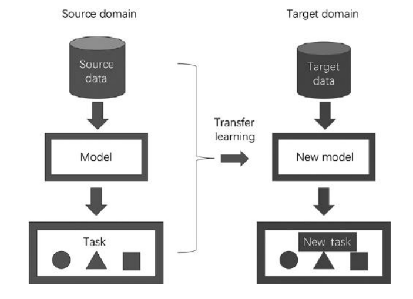
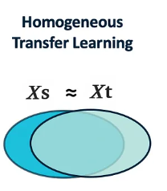
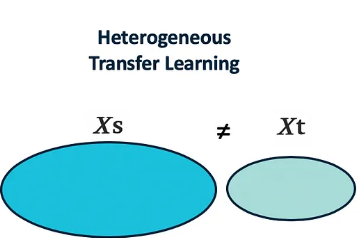

Transfer Learning#
Transfer Learning: A Simplified Overview
In transfer learning, we define “domain,” “task,” and “transfer learning” using the framework from Pan and Yang (2010). A domain \( D \) has two parts: a feature space \( X \) and a probability distribution \( P_X \). Different domains can have different feature spaces or distributions. A task \( T \) within a domain has a label space \( Y \) and a predictive function \( f(\cdot) \). For classification, \( Y \) might be binary or categorical, while for regression, \( Y \) consists of continuous values.
Consider a common scenario with a source domain \( D_s \) and a target domain \( D_t \). The source domain consists of labeled data pairs \( \{(x_{si}, y_{si})\}_{i=1}^{n_s} \), where \( x_{si} \in X_s \) and \( y_{si} \in Y_s \). The target domain has labeled data pairs \( \{(x_{ti}, y_{ti})\}_{i=1}^{n_t} \), where \( x_{ti} \in X_t \) and \( y_{ti} \in Y_t \).

Transfer Learning: Key Concepts and Categories
A domain \( D \) is defined as \( D = \{X, P_X\} \), where \( X \) is the feature space and \( P_X \) is the probability distribution. When \( D_s \neq D_t \), it indicates either \( X_s \neq X_t \) or \( P_{X_s} \neq P_{X_t} \). A task \( T \) is given by \( T = \{Y, P_{Y|X}\} \), where \( Y \) is the label space and \( P_{Y|X} \) is the conditional probability. If \( T_s \neq T_t \), then \( Y_s \neq Y_t \) or \( P_{Y_s|X_s} \neq P_{Y_t|X_t} \). When the source and target domains and tasks are identical (\( D_s = D_t \) and \( T_s = T_t \)), the problem simplifies to a traditional machine learning problem.
Categories of Transfer Learning:
Homogeneous Transfer Learning:
Here, \( X_s = X_t \) and \( Y_s = Y_t \), but \( P_{X_s} \neq P_{X_t} \) or \( P_{Y_s|X_s} \neq P_{Y_t|X_t} \). The goal is to improve the target function \( f_t(\cdot) \) using knowledge from \( D_s \) and \( T_s \).

Heterogeneous Transfer Learning:
In this case, \( X_s \neq X_t \) or \( Y_s \neq Y_t \). The aim is to enhance \( f_t(\cdot) \) using the source domain’s knowledge despite differences in feature spaces or label spaces.

Types of Transfer Learning Based on Data Availability:
Supervised Transfer Learning:
Only a few labeled instances are available in the target domain, with no use of unlabeled data.
Semi-Supervised Transfer Learning:
Both a small amount of labeled data and a large amount of unlabeled data are available in the target domain.
Unsupervised Transfer Learning:
Only unlabeled data is available in the target domain.
Research Issues in Transfer Learning:
When to Transfer:
Determines if and when transferring knowledge is beneficial or harmful. Unrelated domains can lead to negative transfer, which adversely affects performance.
What to Transfer:
Identifies the specific knowledge that can be transferred. This knowledge can be domain-specific or shared across domains.
How to Transfer:
Refers to the method of transferring knowledge:
Instance-Based: Transfers knowledge via weights of source instances.
Feature-Based: Transfers knowledge through the feature subspace shared between domains.
Model-Based: Transfers knowledge embedded in parts of the source models.
Relation-Based: Transfers knowledge through rules specifying relationships in the source domain.